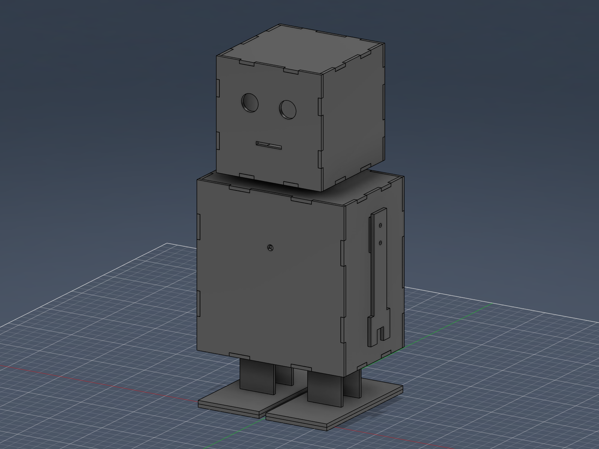

ENGENHARIA DE SOFTWARE · CP5
ROBERTO
Projetos, corte, montagem, Arduino e aplicação local para levar à faculdade.
Comece por aqui
Copie esta pasta inteira para o computador de apresentação, preferencialmente para C:\ROBERTO. Evite executar os modelos diretamente de um pendrive lento. Use Windows 10/11 de 64 bits; 16 GB de RAM são recomendados para esta configuração. Em outro computador, teste áudio, câmera e desempenho antes da apresentação.
Para conversar agora: dê dois cliques em INICIAR_ROBERTO.bat. Se o navegador não abrir um arquivo BAT ao clicar no link, abra a pasta no Explorador de Arquivos e dê dois cliques no arquivo. O início padrão é simulação, sem Arduino.
Montagem do MDF
Passo a passo dos pés, pernas, corpo, servo, braços, LED e cabeça

Antes de fabricar: confira o SG90 e o horn reais, meça o MDF e corte o teste de encaixe. LED sem resistor externo: o firmware usa o resistor interno do ATmega328P, com brilho muito fraco. Não é uma ligação de LED comum diretamente ao 5V ou OUTPUT/HIGH. O servo só pelo USB ainda depende de teste com o hardware.
O que roda onde
O notebook roda a IA, a webcam, o microfone, a voz e o painel. O Arduino recebe apenas os comandos do braço e do LED. Você grava o firmware uma vez; depois usa o BAT do Roberto para conversar.
Os dados de rosto, agenda e histórico desta sessão não foram incluídos na distribuição. As funções de clima, cotação e pesquisa ainda dependem de internet. A execução em um segundo computador e todos os testes com Arduino físico continuam pendentes.